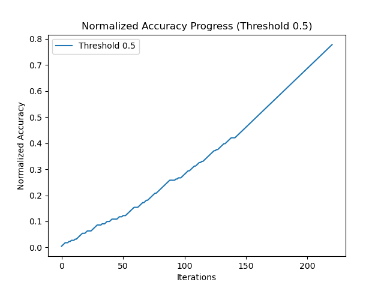
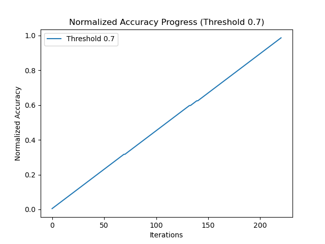

Выбор модели
Использование CNN
Сначала в качестве базового решения использовалась сверточная нейронная сеть (CNN). Однако, для ее качественного обучения требовалось большое количество данных.
Основной принцип работы CNN заключается в применении сверток и подвыборок (pooling), что позволяет выделять важные признаки изображения.
Формула свертки:
\[(I * K)(x, y) = \sum_{i=-m}^{m} \sum_{j=-n}^{n} I(x+i, y+j) K(i, j)\]
Ниже представлены графики потерь и точности обучения CNN:
.png)
.png)
Архитектура модели CNN:
.png)
Переход на FaceNet
Поскольку для системы проходной сложно собрать большой датасет, было принято решение использовать FaceNet.
FaceNet использует триплетную функцию потерь:
\[L = \sum_{i} \max(0, || f(A_i) - f(P_i) ||^2 - || f(A_i) - f(N_i) ||^2 + \alpha )\]
Где:
- \(A_i\) — якорное изображение
- \(P_i\) — положительный пример (изображение того же человека)
- \(N_i\) — отрицательный пример (изображение другого человека)
- \(\alpha\) — маржа, обеспечивающая разницу между положительными и отрицательными примерами
FaceNet позволяет получать эмбеддинги лиц даже по одной фотографии, что делает его идеальным для применения в условиях ограниченных данных.
При сравнении моделей FaceNet показал более высокую точность на небольшом количестве данных:
 Теперь, когда человек смотрит в камеру, его эмбеддинг вычисляется и сравнивается с базой данных для идентификации.